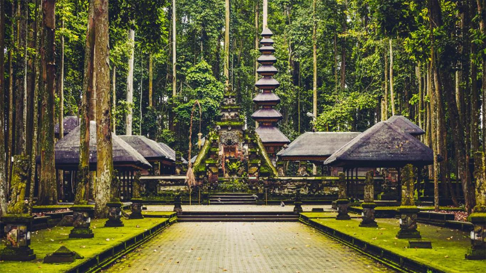
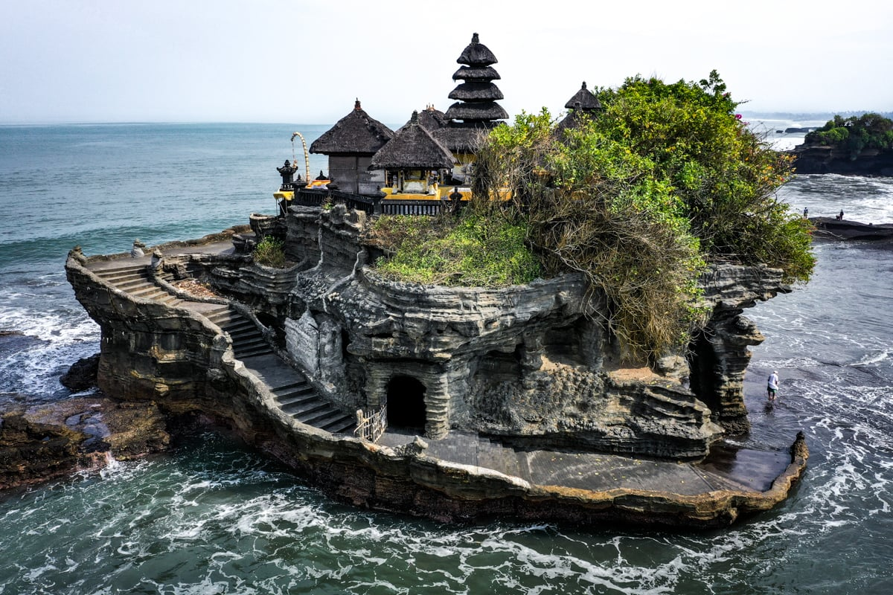

Ubud Monkey Forest
A sanctuary and temple complex where you can walk among playful monkeys while exploring sacred Balinese Hindu temples.
READ MORE »

Tanah Lot Temple
One of Bali’s most iconic sea temples, Tanah Lot is perched on a rock in the ocean, best visited at sunset for stunning views.
READ MORE »
Tegallalang Rice Terraces
Famous for its beautiful terraced rice fields, Tegallalang offers a perfect Instagram-worthy spot surrounded by lush greenery.
READ MORE »
Mount Batur
Hike Mount Batur at dawn to witness a magical sunrise with panoramic views of the volcanic landscape and Lake Batur.
READ MORE »
Uluwatu Temple
Perched on a clifftop, Uluwatu Temple is famous for breathtaking ocean views and its traditional Kecak fire dance performance.
READ MORE »
Seminyak Beach
Seminyak Beach is a stylish coastal area with beach clubs, luxury resorts, shopping, and one of the best sunset views in Bali.
READ MORE »